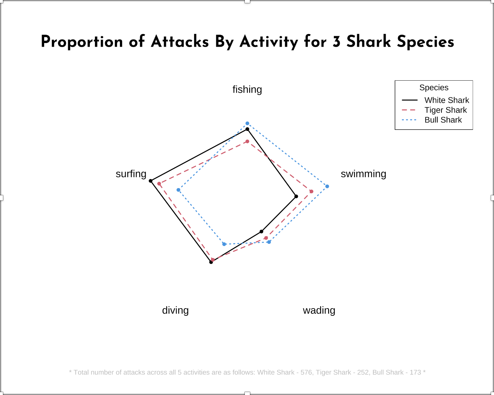
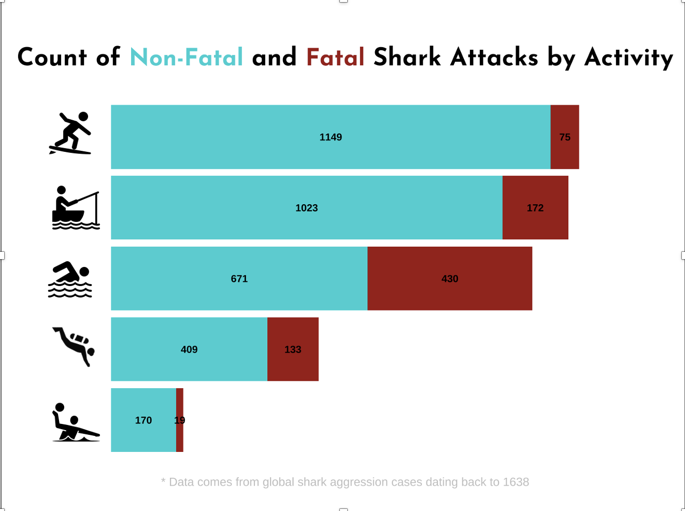
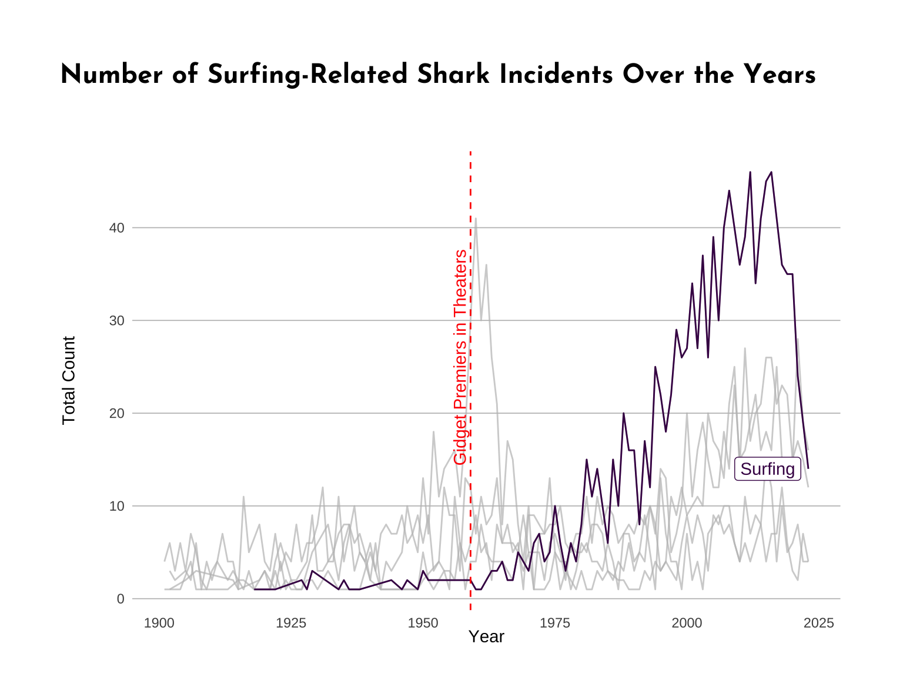

Code
# load packages ----
library(tidyverse)
library(here)
library(readr)
library(janitor)
library(corrplot)
library(fmsb)
library(dplyr)
library(showtext)
library(png)
library(grid)
library(ggrepel)
library(ggtext)
library(glue)I have been around the ocean for the majority of my life and have enjoyed having fun riding waves or exploring beneath them. I have swam with sharks many times and it has always been a positive experience for me. Ever since the first Jaws movie came out, sharks have been perceived as a killing machine, with a blood lust that can only be appeased by taking human lives. In reality, this is so far from the truth. Sharks are incredible animals and on the rare occasions where they do have a negative interaction with humans, it is often a mistake on the shark’s part. I wanted to display the data to pull away the curtain of uncertainty on where sharks act aggressively. I hope that this post is informative and not scary.
Data Available Here: https://public.opendatasoft.com/explore/dataset/global-shark-attack/table/?flg=en-us&disjunctive.country&disjunctive.area&disjunctive.activity
The “activity” column had hundreds of different descriptions detailing what someone was doing when they were aggressed on by a shark. I chose to analyze 5 common activities: surfing, swimming, diving, fishing and wading. It is important to note that, due to the inconsistency in naming, each of these categories contain variations of subgroups within them. For example, fishing includes any string with “fishing” in it. This could be “spearfishing”, or “boat fishing” for example.
Below are the libraries that I used:
# load packages ----
library(tidyverse)
library(here)
library(readr)
library(janitor)
library(corrplot)
library(fmsb)
library(dplyr)
library(showtext)
library(png)
library(grid)
library(ggrepel)
library(ggtext)
library(glue)I created three types of visualizations for this analysis. Each visualization is tied with one another, through looking at different aspects of the 5 activities mentioned above.
For the spider plot, I wanted to visualize the 3 most commonly known aggressive species (Tiger Shark, White Shark, Bull Shark) if there is any difference in the types of activities that they are most aggressive towards. I first calculated proportions of attacks for each activity, for each species.
sum(grepl("tiger shark", sharks$species, ignore.case = TRUE) & grepl("fishing", sharks$activity, ignore.case = TRUE))
sum(grepl("tiger shark", sharks$species, ignore.case = TRUE) & grepl("surfing|paddle boarding|body boarding", sharks$activity, ignore.case = TRUE))
sum(grepl("tiger shark", sharks$species, ignore.case = TRUE) & grepl("diving", sharks$activity, ignore.case = TRUE))
sum(grepl("tiger shark", sharks$species, ignore.case = TRUE) & grepl("standing|wading|floating", sharks$activity, ignore.case = TRUE))
sum(grepl("tiger shark", sharks$species, ignore.case = TRUE) & grepl("swimming", sharks$activity, ignore.case = TRUE))sum(grepl("white shark", sharks_spider$species, ignore.case = TRUE) & grepl("fishing", sharks_spider$activity, ignore.case = TRUE))
sum(grepl("white shark", sharks_spider$species, ignore.case = TRUE) & grepl("surfing|paddle boarding|body boarding", sharks_spider$activity, ignore.case = TRUE))
sum(grepl("white shark", sharks_spider$species, ignore.case = TRUE) & grepl("diving", sharks_spider$activity, ignore.case = TRUE))
sum(grepl("white shark", sharks_spider$species, ignore.case = TRUE) & grepl("standing|wading|floating", sharks_spider$activity, ignore.case = TRUE))
sum(grepl("white shark", sharks_spider$species, ignore.case = TRUE) & grepl("swimming", sharks_spider$activity, ignore.case = TRUE))sum(grepl("bull shark", sharks_spider$species, ignore.case = TRUE) & grepl("fishing", sharks_spider$activity, ignore.case = TRUE))
sum(grepl("bull shark", sharks_spider$species, ignore.case = TRUE) & grepl("surfing|paddle boarding|body boarding", sharks_spider$activity, ignore.case = TRUE))
sum(grepl("bull shark", sharks_spider$species, ignore.case = TRUE) & grepl("diving", sharks_spider$activity, ignore.case = TRUE))
sum(grepl("bull shark", sharks_spider$species, ignore.case = TRUE) & grepl("standing|wading|floating", sharks_spider$activity, ignore.case = TRUE))
sum(grepl("bull shark", sharks_spider$species, ignore.case = TRUE) & grepl("swimming", sharks_spider$activity, ignore.case = TRUE))I then used the values calculated for each of the three species of sharks to construct a spider plot in order to visualize differences among species.
# create data frame for spider plot to draw from (each value scaled up by 2.7)
sharks_table <- data.frame(
species = c("max", "min", "white shark", "tiger shark", "bull shark"),
fishing = c(100, 0, 77.22, 62.1, 84.24),
surfing = c(100, 0, 99.9, 88.83, 63.99),
diving = c(100, 0, 50.76, 47.25, 23.49),
"wading" = c(100, 0, 4.32, 14.04, 20.25),
swimming = c(100, 0, 38.07, 57.78, 78.03)
)
# change species column to index
rownames(sharks_table) <- sharks_table$species
sharks_table <- sharks_table[,-1]
# adjust the margins of the plot
par(mar = c(5, 2, 8, 2) + 0.1)
# create spider plot
radarchart(sharks_table,
cglty = 0, # specify grid line type
cglcol = "gray",
pcol = c(1,2,4),
plwd = 2,
plty = c(1, 2, 3),
vlcex = 1.25
)
# add title to plot
title(main = "Proportion of Attacks By Activity for 3 Shark Species",
cex.main = 2,
family = "josefin")
# add legend
legend("topright",
legend = c("White Shark", "Tiger Shark", "Bull Shark"),
lty = c(1,2,3),
col = c(1, 2, 4),
lwd = 2,
title = "Species")
# add caption beneath plot
grid.text("* Total number of attacks across all 5 activities are as follows: White Shark - 576, Tiger Shark - 252, Bull Shark - 173 *",
x = 0.5, y = 0.05,
just = c("center", "bottom"),
gp = gpar(fontsize = 10, col = "gray")) This visualization gives some interesting insight into how these three species differ in which activities they are involved in. You can see that White Sharks are mostly involved in surfing incidents and Bull Sharks are mostly involved in swimming incidents.
I next thought that it would be useful to know what the number of fatal vs. non-fatal attacks looks like for each of the 5 activities. I decided to use a stacked bar plot to show this. A note is that I added the pictures next to each bar outside of R. The code produced labels (surfing, fishing, swimming, diving, wading) next to each bar.
# Define the activities
activities <- c("fishing", "surfing", "diving", "wading", "swimming")
# Function to count occurrences of activities by sex
count_activities_by_fatality <- function(activity) {
sapply(c("N", "Y"), function(fatal_y_n) sum(grepl(activity, sharks$activity[sharks$fatal_y_n == fatal_y_n], ignore.case = TRUE)))
}
# Count occurrences of activities for males ("M") and females ("F")
activity_counts <- sapply(activities, count_activities_by_fatality)
# Create a data frame with counts of fatal / non-fatal for each activity
activity_data <- data.frame(
activity = rep(activities, each = 2),
fatal_y_n = rep(c("Non-Fatal", "Fatal"), times = length(activities)),
count = as.vector(activity_counts)
)
# Define the order of activities
activity_order <- c("wading", "diving", "swimming", "fishing", "surfing")
title <- glue::glue("Count of <span style='color:#00ced1;font-size:20pt;'>**Non-Fatal**</span> and <span style='color:#9c1515;font-size:20pt;'>**Fatal**</span> Shark Attacks by Activity")
# Create the stacked bar chart
ggplot(activity_data, aes(x = factor(activity, levels = activity_order), y = count, fill = fatal_y_n)) +
geom_bar(stat = "identity", position = "stack") +
geom_text(aes(label = count),
position = position_stack(vjust = 0.5),
size = 3,
color = "black",
fontface = "bold") +
labs(title = NULL, # Remove the title here
x = NULL,
y = "Total Number of Incidents",
caption = "* Data comes from global shark aggression cases dating back to 1638") +
scale_fill_manual(values = c("Fatal" = "#9c1515", "Non-Fatal" = "#00ced1")) +
theme_minimal() +
coord_flip() +
guides(fill = guide_legend(title = NULL)) +
theme(
plot.title = element_markdown(family = "josefin",
face = "bold",
size = 21,
hjust = 0.5,
margin = margin(b = 20)),
axis.text.x = element_blank(),
# axis.text.y = element_blank(),
plot.margin = margin(40, 70, 20, 70),
axis.title.x = element_blank(),
axis.title.y = element_text(margin = margin(r = 20), hjust = 0.5),
plot.caption = element_text(size = 10, color = "gray", hjust = 0.5, margin = margin(t = 10)),
panel.grid.major = element_blank(),
panel.grid.minor = element_blank(),
legend.position = "none"
) +
ggtitle(glue::glue("{title}")) The main idea that I pulled away from this plot is that the majority of incidents are non-fatal, although swimming has an abnormally high proportion of fatal incidents. This may be due to the fact that, when you are swimming, you do not have a surfboard or other object to block an attack. This is only one guess, however.
In order to introduce the time variable into a plot, I decided to use a line plot to display the yearly count of number of attacks from 1900 to 2025. I first thought that I would display all 5 activities next to each other in order to compare trends, but ultimately decided to focus on surfing. Surfing had the largest increase and I believe that it can be attributed to the growing popularity of the sport around the world.
sharks_line <- sharks |>
select(year, activity) |>
filter(grepl("swimming|surfing|diving|fishing|standing|wading|floating", activity, ignore.case = TRUE)) |>
filter(year > 1900 & year < 2023) |>
mutate(activity_group = case_when(
grepl("fishing", activity, ignore.case = TRUE) ~ "Fishing",
grepl("surfing", activity, ignore.case = TRUE) ~ "Surfing",
grepl("diving", activity, ignore.case = TRUE) ~ "Diving",
grepl("wading|standing|floating", activity, ignore.case = TRUE) ~ "Wading",
grepl("swimming", activity, ignore.case = TRUE) ~ "Swimming"
))
activity_counts <- sharks_line %>%
group_by(year, activity_group) %>%
summarize(count = n()) %>%
ungroup()
p <- ggplot(activity_counts, aes(x = year, y = count, color = activity_group)) +
geom_line() +
labs(
title = "Number of Surfing-Related Shark Incidents Over the Years",
x = "Year",
y = "Total Count",
color = "Activity Group"
) +
scale_color_viridis_d() +
scale_x_continuous(limits = c(1900, 2023)) +
theme_minimal() +
gghighlight::gghighlight(activity_group == "Surfing") +
theme(
plot.title = element_markdown(family = "josefin",
face = "bold",
size = 17,
hjust = 1.5,
margin = margin(b = 40)),
panel.grid.major = element_line(color = "gray", size = 0.3),
panel.grid.major.x = element_blank(),
#panel.grid.major.y = element_blank(),
panel.grid.minor = element_blank(),
plot.margin = margin(40, 40, 20, 40),
axis.title.y = element_text(margin = margin(r = 20), hjust = 0.5, vjust = 1),
axis.title.x = element_text(margin = margin(r = 20), hjust = 0.5, vjust = 1)
)
p + geom_vline(xintercept = 1959, linetype = "dashed", color = "red") +
annotate("text", x = 1959, y = 40,
label = "Gidget Premiers in Theaters", vjust = -0.4, hjust = 1.1, color = "red", angle = 90) You can see from this plot, that the number of annual attacks drastically increased starting in the 1960’s. As I mentioned above, this is likely due to the growing popularity of the sport. More people in the water surfing carries a higher likelihood of an incident. I also noted when the film Gidget came out in 1959. This movie introduced Hollywood’s first surfing movie star and pulled surfing into the mainstream culture.
In order to combine these plots in a fun, educational and engaging way, I created an infographic to display the plots. This infographic explains the overarching question of “Which ocean activities are most likely to encounter an aggressive shark incident?”.

@online{mcconnell2024,
author = {McConnell, Fletcher},
title = {Analyzing {Which} {Ocean} {Activities} {Are} {Most} {Likely}
to {Encounter} {Aggressive} {Shark} {Behavior}},
date = {2024-03-09},
url = {https://fletcher-m.github.io/blog/2024-03-09-shark-aggression-analysis/},
langid = {en}
}